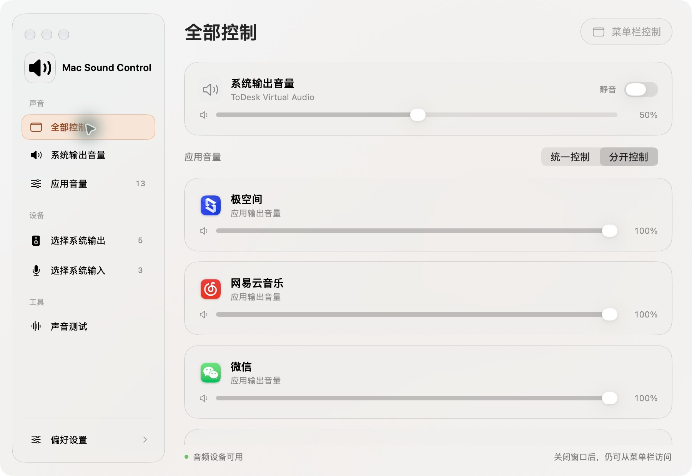
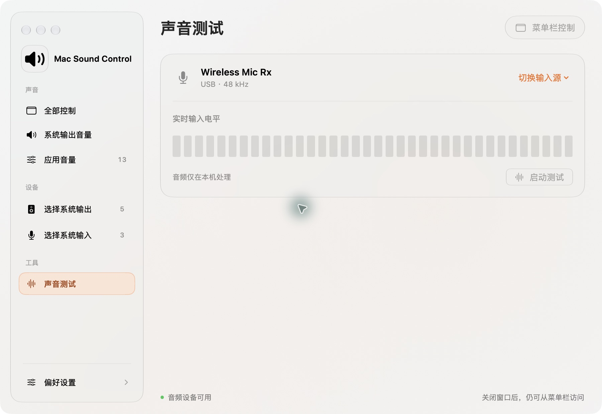

每个应用，自己的音量
统一调节或分开控制，为已识别的音频应用保存 0–100% 音量。菜单栏用一到三条弧线提示系统音量。
音乐轻一点，会议清楚一点。
系统声音、应用音量与麦克风，在一个原生面板里安排妥当。
macOS 14+ · Apple Silicon 与 Intel · 分应用音量需要 macOS 15+

新版界面 · 本机运行截图
菜单栏随时调节，主界面集中管理。每一种操作，都有自己的位置。
统一调节或分开控制，为已识别的音频应用保存 0–100% 音量。菜单栏用一到三条弧线提示系统音量。
内建、USB、蓝牙与显示器设备集中展示。紧凑卡片直接标明当前设备，减少查找与滚动。
实时输入电平帮助检查麦克风；可选常驻让输入保持在线。离开测试页自动停止测试。
SwiftUI 与 AppKit 构建界面，CoreAudio 负责声音。无需账号，没有遥测；音频仅在内存实时处理，不录制、不上传。
Apple Developer ID 签名Apple 公证Sparkle 签名更新